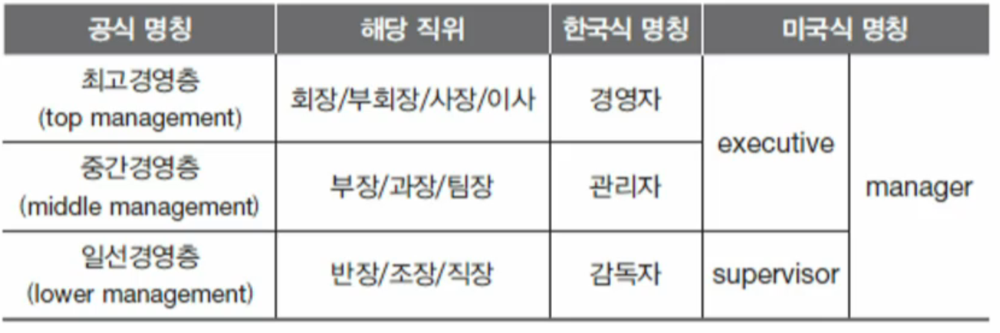
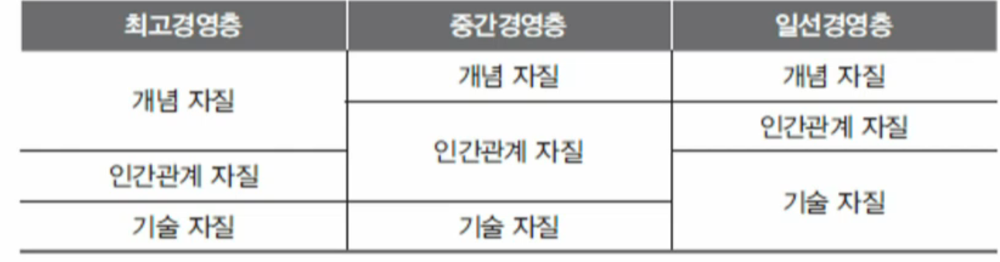
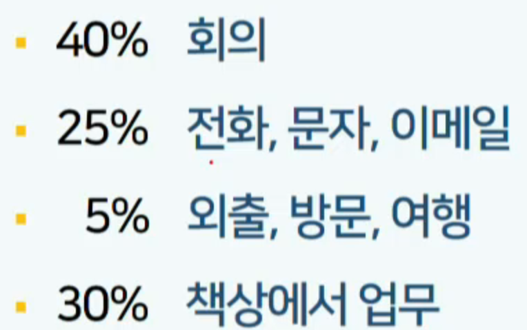
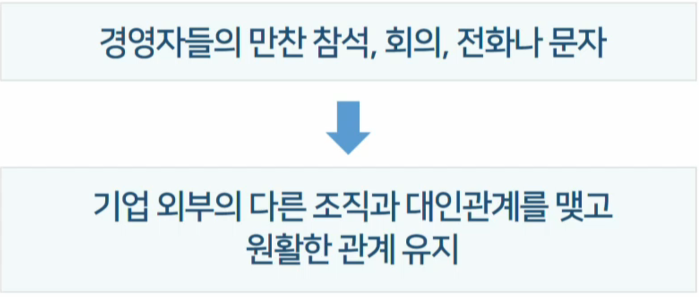
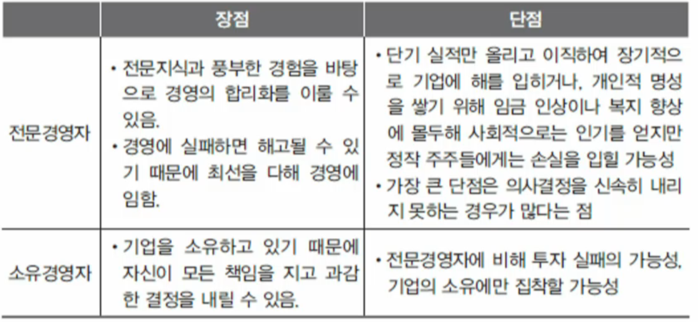

기업인과 경영자
학습 목차
경영자는 누구인가
계층에 따른 경영자 분류
경영자가 가져야 할 자질
경영자의 업무
전문 경영자와 소유 경영자
기업가 정신과 창업
경영자는 누구인가
경영자는 경영을 수행하는 사람
기업가는 기업을 일으켜 사업을 수행하는 사람으로 기업의 소유자
기업 소유주(기업가)가 직접 경영하면 소유경영자
기업 소유주(기업가)가 다른 사람을 고용하여 경영하는 경우, 경영자는 고용 경영자
소유와 경영을 분리: 전문경영자가 경영을 담담 - 주식회사의 발전으로
사업가는 반드시 기업가라고 볼 수도 없고, 또 경영자라고 볼 수도 없습니다.
계층에 다른 경영자 분류
의미
경영자는 개인만 뜻하지 않으며 경영기능을 담당하는 집단을 의미
현대기업의 경우 전문지식과 경험,능력을 갖춘 전문가 집단
경영자의 세가지 계층

최고 경영층
최고경영층의 범위와 기능은 기업의 규묘에 따라 차이가 발생
주식회사의 최고 경영층: 수탁 기능과 전반관리기능
수탁기능: 주주의 이익 대표.보호, 기본 정책과 방향 결정, 기업 전체 성과 평과, 이사회의 주된 임무
전반관리기능: 이사회의 기본 방향 내에서 계획,조직,통제,이해관계집단과 원활한 관계 유지, 최고 경영책임자(
CEO)를 중심으로 최고 경영자
중간 경영층
직능별, 지역별, 제품별,공장별 부서의 관리,부문 경영층 - 생산,재무, 마케팅
업무 배정,업무 수행 목표.계획 수립,부서원 업무평가,능력 개발,동기 부여등의 역할 수행
주요 기능은 최고경영층과 일선경영층간 원활한 커뮤니케이션
기업의 규모가 작을수록 위치와 역할이 모호
일선경영층
하층 경영층 - 현장에 관리
기계,설비,생산공정,재료 등의 책임지고 감독하며 현장에서 일하는 관리자
작업자 지휘,일 독려하고 감독 역할 수행
기업의 목표 달성과 생산성 향상은 이들에 의해 좌우됨
기업 규모와 관계없이 일선경영층의 지위와 역할은 뚜렷함
경영자가 가져야 할 자질
개념자질
추상적인 어떠한 개념을 가지고 판단하고 분석하는 그런 자질이 있어야 된다는 것입니다.
상황 변화 분석,발전 방향과 전략 설정할 수 있는 자질
경영 방침이 기업의 각 부문에 미칠 영향 예측 및 대처
특히 최고 경영층에 요구됨
인관관계 자질
계층에 관계없이 모든 구성원의 능력과 성격을 이해할 수 있는 자질
관계 유지,견해가 다른 사람 설득하여 동의 및 협조를 이끌어낼 수 있는 자질
특히 중간 경영층에 요구됨
기술 자질
작업을 수행하는 데 필요한 기술적 전문성
특히 일선경영층에 요구됨
경영자의 자질

경영자의 업무
의사결정

기업의 경영은 의사결정과정 사이먼은 경영은 의사결정과정이다
의사결정은 경영자의 핵심 역할
관계 형성

관계를 맺고 유지하기 위한 업무를 한다.
정보전달
기업 내 조직의 다양한 정보는 조직의 장에 집중
업무 관련 정보 수집 및 전달
혁신
슘페터
이윤 창출은 산업이 동태 상태에 있을 때 가능, 따라서 혁신이 중요
기존의 방식을 답습하지 않고 새로운 방식 혹은 남들과 차별화된 과정을 거치는 것
혁신은 최고경여층뿐만 아니라 모든 경영자의 몫
공정 혁신,기술 혁신으로 나누어집니다.
포드라는 경영자가 공정 혁신으로 산업화를 이룸
전문경영자와 소유경영자
의미
소유 경영자
기업을 설립,지분 매입으로 대주주가 되어 실질적으로 기업을 소유하고 직접 경영하는 경영자
전문 경영자
경영에 관한 전문 지식을 갖추었으며 경험이 풍부하여 기업에 고용된 경영자
소유와 경영의 분리가 일반화된 오늘날에도 여전히 소유주가 경영에 참여하는 경우가 다수 존재
주식이 고도로 분산된 현대 주식회사에서 개인이 지배권을 행사할 수 있을 정도로의 대량 주식 소유 어려움
대부분의 소유경영자들도 전문경영자
장단점

기업가정신과 창업
창업하는 이유
스스토 성장하고 사회에 공헌할 수 있는 기회
장애인 창업, 실리콘 벨리 창업자의 40% 이민 1세대
이익에 대한 기대감
도전에 얻는 성취감
독자적인 업무 수행 가능
40% 가족 사업참여,30% 자신의 주인이 되기위해 등
창업가는 누구인가
창업가 = 소유주 + 전문 경영자
창업자의 성격 특성
내적 통제위치를 가진 사람 - 내 미래는 내가 결정한다
넘치는 에너지를 가진 사람
활동 지향적
자기확인이 강함
불확실함과 모호함을 인내
창업자의 개인 특성
창업하는 나이가 정해져 있는 것은 아님
집안 환경도 창업에 미치는 영향이 큼
개인적 취향과 경험이 중요
창업과정
사업기회 발견
업무경험의 확장
틈새시장의 발견
기존 업체 인수
프랜차이즈 가입
사업기회평가
사업 시기가 적절한지 판단(성장 가능성,신속성,사업 시작 시점)
잠재수익성검토(투하한 자본,시간,기회비용 등 고려)
사업의 확장 가능성,상황에 따른 유연성 검토
폐업이 용이한지 고려
사업계획서 작성 - 문서로 쓰다보면 구체화가 된다
구체적인 실행반안까지 포함하여 사업의 가능성 검토 및 평가 과정
자원의 확보방안, 발생할 수 있는 위험, 진출한 시장의 상황등을 사전 검토
투자자를 설득하여 사업에 참여하게 만드는데 반드시 필요
창업자 소개,사업의 목적과 성격,제품 혹은 서비스의 내용 환경분석,제품 생산방식 및 마케팅 계획, 잠재 수익성 및 가치 평가, 자본조달 시기 및 방법등이 포함
사업자금 확보
저축,담보,매각된 사업
성장,유지,철수
기업이 성장함에 따라 성장을 도모할 것인지, 규모를 유지할 것인지 철수 할 것인지 결정해야하는 시기가 도래
성장이 제대로 안 되거나, 유지마저 어렵거나, 의욕이 상실하거나, 일신상의 이유로 사업을 접는 경우
성장하는 사업의 관리
창업초기
생산이 계획대로 진행되는지,제품이 기대했던 품질을 가졌는지 확인하고 문제가 있으면 수정하고 개선
생존기
충분한 현금의 흐름을 창출해야 하며 수익을 내기 시작해야함
성공기
창업자에게 경영에 대한 두려움이 생겨나고 전문경영자 고용을 고려
도약기
성장으로 경영상 문제가 생길 경우 창업자가 많은 권한 위임을 결정해야하는 시기이며 더 큰 성장을 위해서는 적극적으로 투자를 유치해야 함
성숙기
일반 기업철머 많은 직업이 동원되어 계획을 세우고 실행하며 통제하며,정해진 절차와 규정에 따라 기업 경영이 이루어짐
연습문제
계층에 따라 경영자는 최고, 중간, 일선 경영층으로 구분된다. 이는 공식 명칭인데 한국에서 일선경영층을 지칭하는 일상 용어는?
경영자
관리자
감독자
반장
최고경영층의 기능 중 수탁기능이란?
경영자가 가져야 할 자질 중 최고경영자가 특히 지녀야할 자질은?
경영자의 역할 중 가장 핵심적인 것이라 할 수 있는 것은?
창업가를 정확히 설명하는 것은?